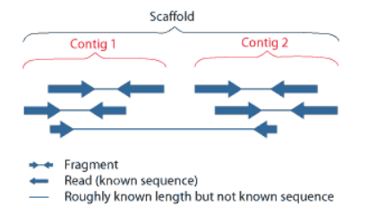

SPAdes(assembly)
SPAdes的原理部分之前已经写过了，见de Bruijn graph。
SPAdes takes as input paired-end reads, mate-pairs and single (unpaired) reads in FASTA and FASTQ. 进行assembly后输出fastq文件，推荐scaffold作为结果文件。
SPAdes 有以下几个模块：
- BayesHammer – 矫正Illumina reads的读取错误，该工具在single cell和标准数据集上均能很好地工作。
- IonHammer – 矫正IonTorrent data的读取错误，同样在两种数据集上良好工作。
- SPAdes – iterative short-read genome assembly module 迭代短读基因组组装模块； 根据读取的长度和数据集类型自动选择K的值。
- MismatchCorrector – 改善contigs和scaffolds的错配mismatch和短插入缺失indel率；这个模块使用BWA工具。MismatchCorrector默认关闭，我们可以开启它（建议）。
建议SPAdes与BayesHammer/IonHammer同时使用，得到高质量的assembly. 但是也可以单独使用SPAdes assembly或矫正模块。
1 | # Performs read error correction only. |
命令行
1 | spades.py [options] -o <output_dir> |
- paired-end reads
1 | --pe<#>-1 <file_name> |
1 | spades.py --pe1-1 H11_01_1.fastq \ |
观察一下它的运行过程（还挺耗时的），摘取了一些INFO，其实可以直接看spades.log
1 | ======= SPAdes pipeline started. Log can be found here: /home/ubuntu/users/sisih/data/spades_test/spades.log |
大概是这样……没有使用MismatchCorrector，但是有读取的矫正（hammer）。
run assembler with --careful option to minimize number of mismatches in the final contigs.
尝试减少不匹配和插入缺失的数量。 还运行MismatchCorrector –一种后处理工具，该工具使用BWA工具（随SPAdes一起提供）。 仅在组装小型基因组时才建议使用此选项。 强烈建议不要将其用于大中型真核基因组。 请注意，metaSPAdes和rnaSPAdes不支持此选项。
- Multi-cell data set with read length 2x150
Do not turn off SPAdes error correction (BayesHammer module), which is included in SPAdes default pipeline.
If you have enough coverage (50x+), then you may want to try to set k-mer lengths of 21, 33, 55, 77 (selected by default for reads with length 150bp).
1 | spades.py -k 21,33,55,77 --careful <your reads> -o spades_output |
- Multi-cell data set with read lengths 2 x 250
Do not turn off SPAdes error correction (BayesHammer module), which is included in SPAdes default pipeline.
By default we suggest to increase k-mer lengths in increments of 22 until the k-mer length reaches 127. The exact length of the k-mer depends on the coverage: k-mer length of 127 corresponds to 50x k-mer coverage and higher. For read length 250bp SPAdes automatically chooses K values equal to 21, 33, 55, 77, 99, 127.
1 | spades.py -k 21,33,55,77,99,127 --careful <your reads> -o spades_output |
- Single-cell data set with read lengths 2 x 150 or 2 x 250
The default k-mer lengths are recommended. For single-cell data sets SPAdes selects k-mer sizes 21, 33 and 55.
1 | spades.py -k 21,33,55 --careful --pe1-1 H11_01_1.fastq \ |
log文件最后果然多了一步Mismatch correction
1 | (sisih0228) ubuntu@ip-10-0-1-105:~/users/sisih/data$ less spades_output/spades.log |grep ===== |
结果目录
SPAdes stores all output files in <output_dir> , which is set by the user.
-
<output_dir>/corrected/directory contains reads corrected by BayesHammer in*.fastq.gzfiles; if compression is disabled, reads are stored in uncompressed*.fastqfiles -
<output_dir>/scaffolds.fastacontains resulting scaffolds (recommended for use as resulting sequences) -
<output_dir>/contigs.fastacontains resulting contigs -
<output_dir>/assembly_graph.gfacontains SPAdes assembly graph and scaffolds paths in GFA 1.0 format -
<output_dir>/assembly_graph.fastgcontains SPAdes assembly graph in FASTG format -
<output_dir>/contigs.pathscontains paths in the assembly graph corresponding to contigs.fasta (see details below) -
<output_dir>/scaffolds.pathscontains paths in the assembly graph corresponding to scaffolds.fasta.
Contigs/scaffolds names in SPAdes output FASTA files have the following format:>NODE_3_length_237403_cov_243.207
Here 3 is the number of the contig/scaffold, 237403 is the sequence length in nucleotides and 243.207 is the k-mer coverage for the last (largest) k value used. Note that the k-mer coverage is always lower than the read (per-base) coverage.
A scaffold is a portion of the genome sequence reconstructed from end-sequenced whole-genome shotgun clones. Scaffolds are composed of contigs and gaps. A contig is a contiguous length of genomic sequence in which the order of bases is known to a high confidence level. Gaps occur where reads from the two sequenced ends of at least one fragment overlap with other reads in two different contigs (as long as the arrangement is otherwise consistent with the contigs being adjacent). Since the lengths of the fragments are roughly known, the number of bases between contigs can be estimated.

一点经验
scaffolds.fasta和contigs.fasta同时存在时推荐使用scaffolds.fasta，其包括了contigs和gaps（应该会用N代替）。
1 | $ less -S contigs.fasta |grep NNN|wc -l |
但是scaffolds.fasta并不会每一份结果都有，如果fastq reads pair数目比较少就会没有，观察了一下20000 reads就没有，2000 reads可能contigs也没了。两者再文件大小上差不多，行数上也差不多。
1 | $ wc -l contigs.fasta |
references:
1.SPAdes manual http://cab.spbu.ru/files/release3.13.0/manual.html
2.SPAdes: A New Genome Assembly Algorithm and Its Applications to Single-Cell Sequencing https://www.ncbi.nlm.nih.gov/pmc/articles/PMC3342519/
3.[Scaffold - JGI Genome Portal](https://mycocosm.jgi.doe.gov/help/scaffolds.jsf#:~:text=A scaffold is a portion,to a high confidence level.)